| 応募期間 | 2026年5月6日(水) ～ 6月5日(金) 23:59 (受付終了) |
|---|---|
| 作品提出締切 | 2026年6月23日(火) 23:59 (受付終了) |
| 一次審査結果通知 | 2026年6月30日(火) 上位6作品を選出。入選者へメールにて通知します。 |
| アートコンテスト開催日程 （一般審査・最終審査） |
2026年8月7日(金) ～ 8月8日(土) 当日の詳細スケジュールは、入選者へのメールで個別にご案内します。 |
| 作品形式 | 表現形態は問いません（画像、動画、立体物、WEBコンテンツ等）。 可視化に関するアート作品を幅広く募集します。 |
| 各賞 | 大賞(1点)、金賞(1点)、銀賞(1点)、銅賞(3点) |
| 参加に関するお願い |
一次審査通過者は、アートコンテストへの出席が必要です。 また、当日の作品紹介や表彰のため、以下の登録が必須となります。 ・シンポジウム参加登録：展示および入場のため ・シンポジウム懇親会参加登録：表彰のため ➡ 第53回可視化情報シンポジウム 登録ページ |
| 募集要項および応募用紙 |
詳細は下記の募集要項ファイルをダウンロードしてご確認ください。 ・第53回可視化情報シンポジウム アートコンテスト 募集要項 |
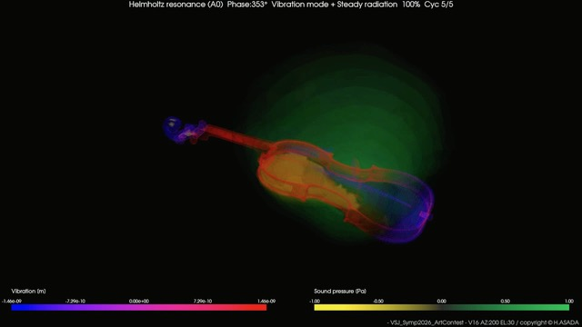
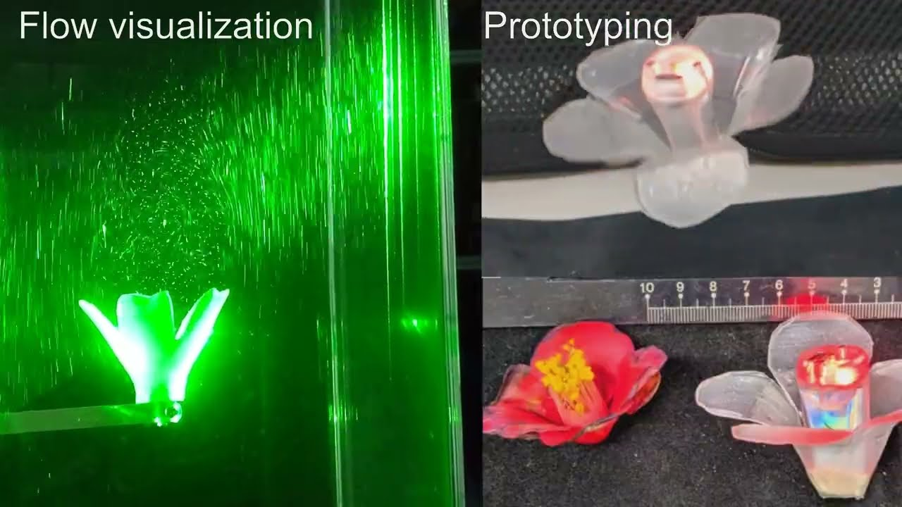
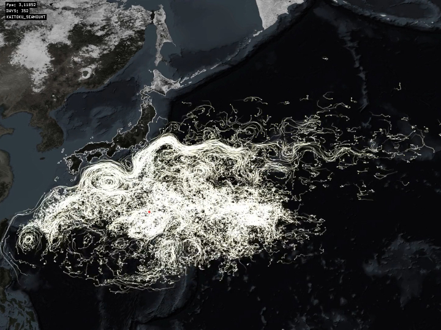
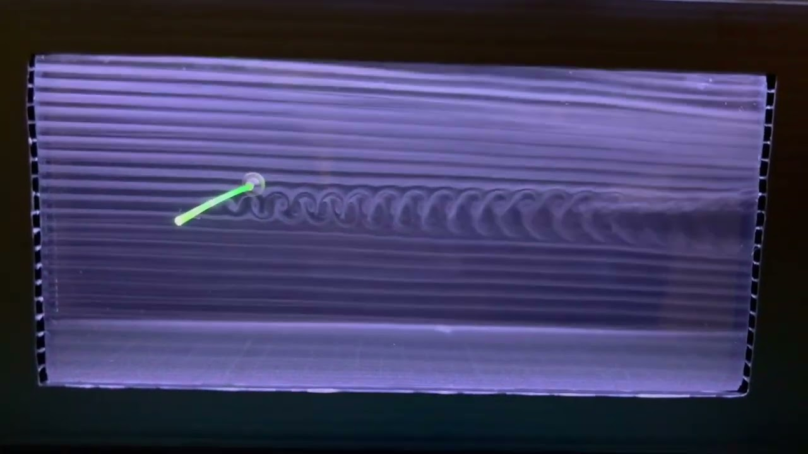
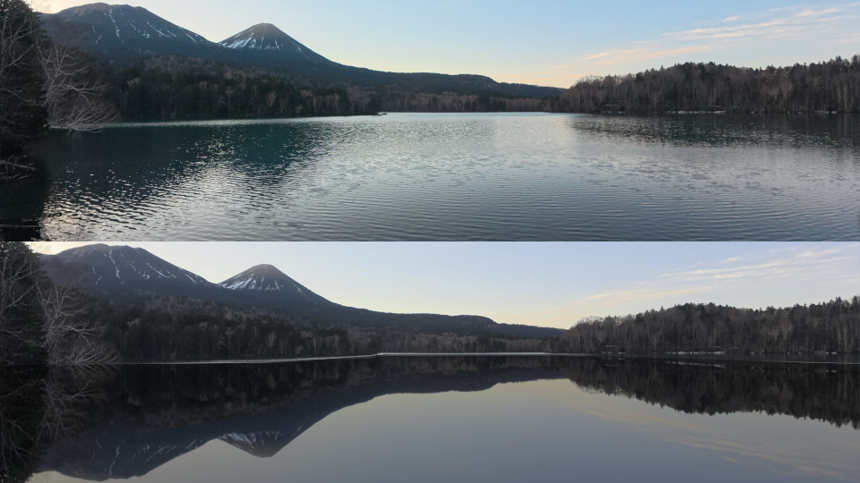
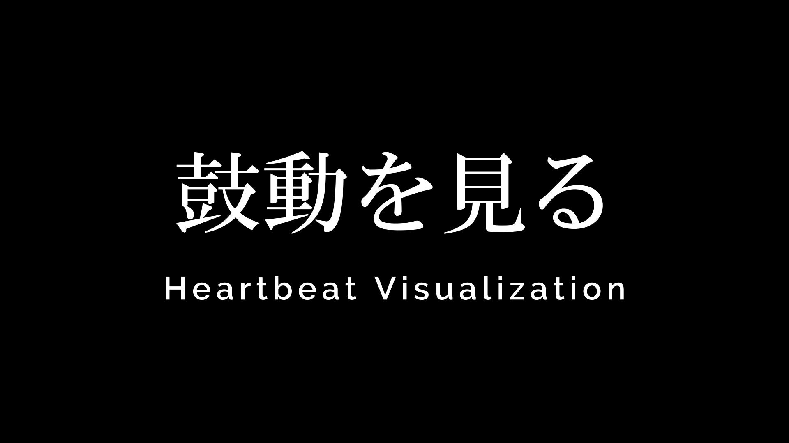
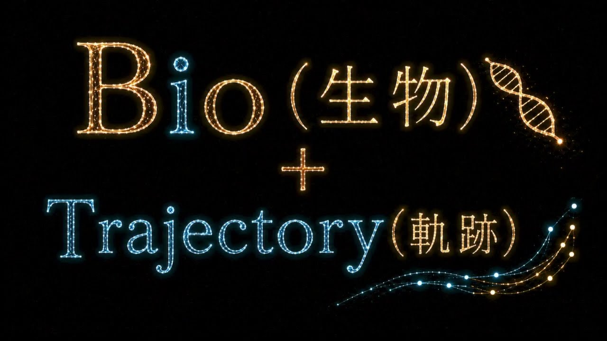
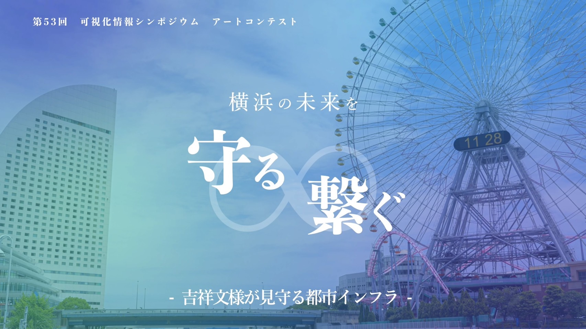
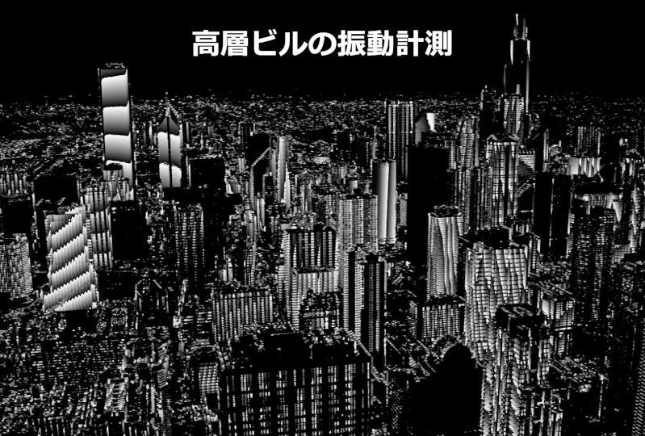
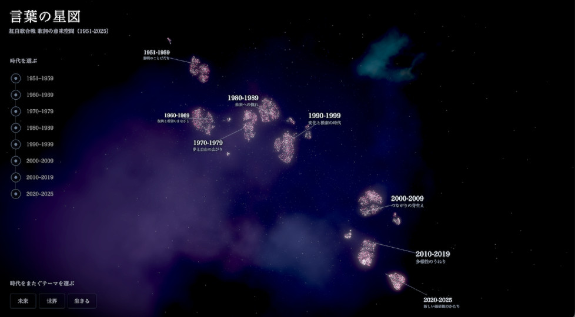
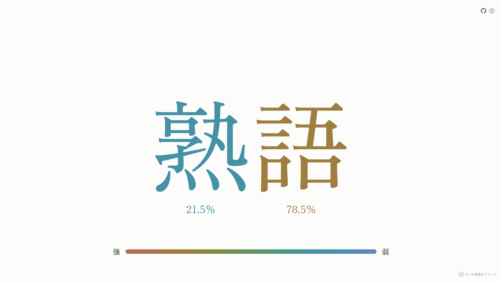
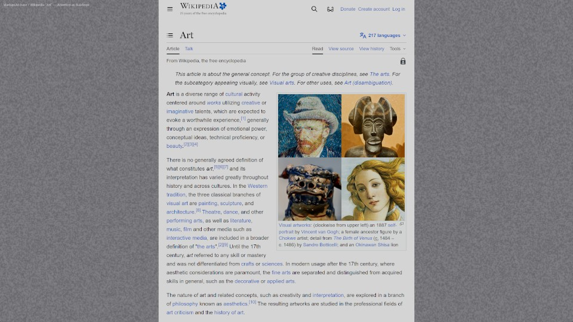
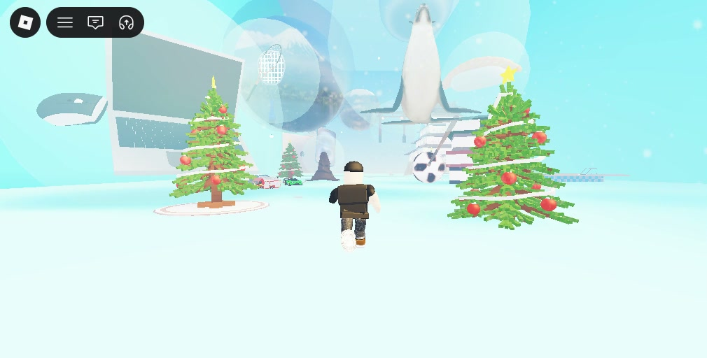
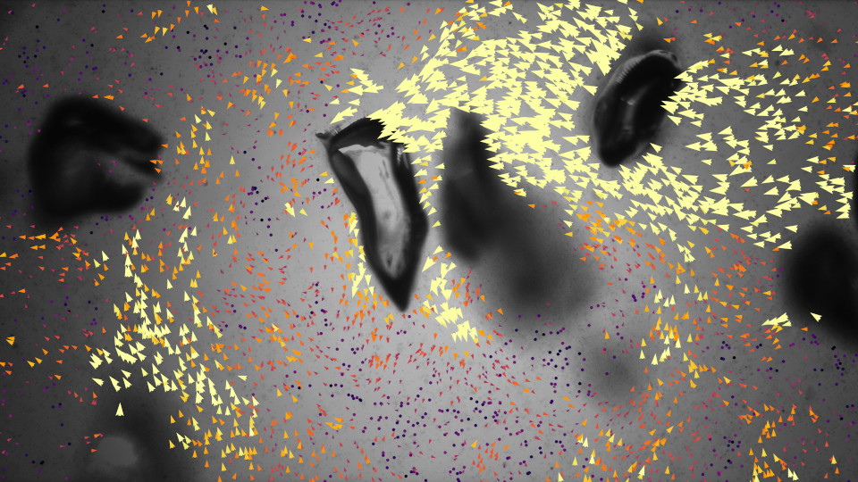
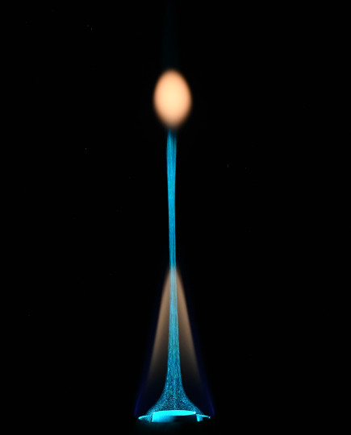
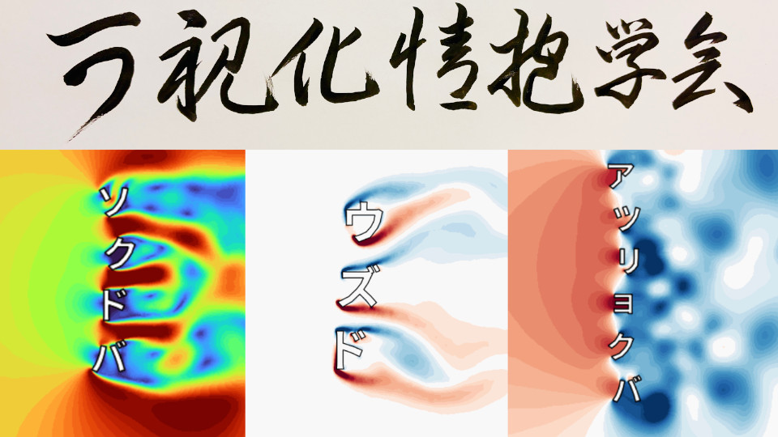
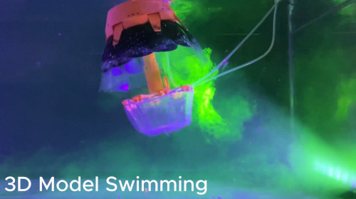
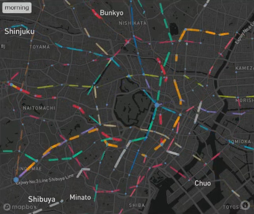
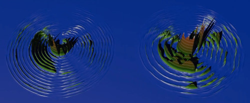
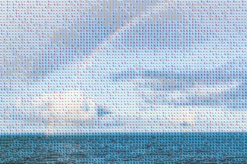
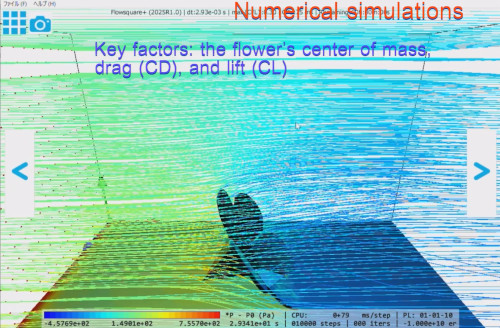
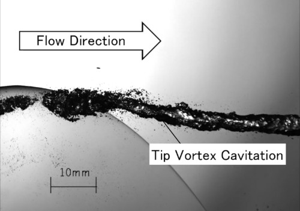
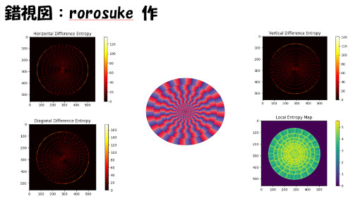
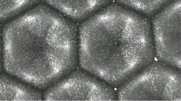
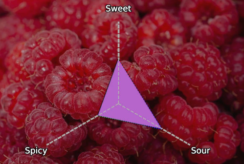
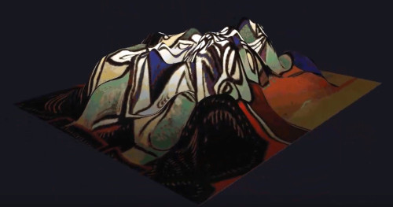
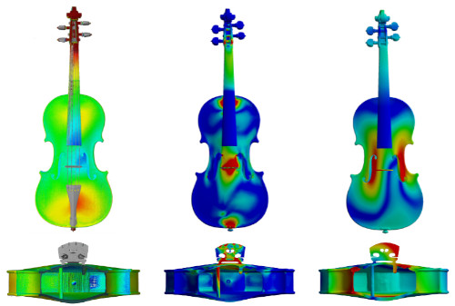
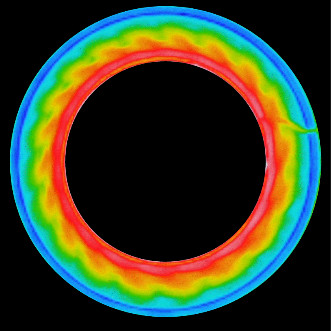
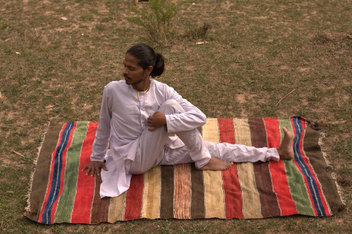
| 作品名 | Violinの３次元音響放射立体可視化 |
|---|---|
| 作品形態 | 動画 |
| 製作者 | 浅田 仁志 |
| 公開URL | 本サーバー |
| 作品名 | The Silent Landing of a Camellia |
|---|---|
| 作品形態 | 動画 |
| 製作者 | 細谷 和範 |
| 公開URL | https://youtu.be/SGnB2cqKreg |
| 作品名 | 海底火山噴火の軽石漂流シミュレーション |
|---|---|
| 作品形態 | 動画 |
| 製作者 | 山辺 真幸、西川 悠、桑谷 立、黒木 聖夫 |
| 公開URL | https://vimeo.com/1109314883 |
| 作品名 | Frozen Karman vortex |
|---|---|
| 作品形態 | 動画 |
| 製作者 | 岩野 耕治 |
| 公開URL | https://youtu.be/1NOTzBSdpBU |
| 作品名 | AIを用いた手影絵のインタラクティブアート |
|---|---|
| 作品形態 | 動画 |
| 製作者 | 深石 愛梨、宮地 英生、飯田 周一 |
| 公開URL | 本サーバー |
| 作品名 | Still Symmetry |
|---|---|
| 作品形態 | 画像 |
| 製作者 | Yuta SHIGA |
| 公開URL | 本サーバー |
| 作品名 | 鼓動を見る -Visualization of heartbeat- |
|---|---|
| 作品形態 | 動画 |
| 製作者 | 藤田 拓希、佐山 開都、内田 太士、 堀井 ももこ、チェ ミョンホン |
| 公開URL | https://youtu.be/KlE6RIvFT8s |
| 作品名 | Biojectory |
|---|---|
| 作品形態 | 動画 |
| 製作者 | 杉山 裕也、岩山 うみ、永山 遼、 藤田 優翔、脇田 康暉 |
| 公開URL | https://youtu.be/nXVVDsX7SDc |
| 作品名 | 横浜の未来を守る・繋ぐ —吉祥文様が見守る都市インフラ— |
|---|---|
| 作品形態 | 動画 |
| 製作者 | 蛇石 安珠、蛇石 果杏、李 志遠、荻原 慎二 |
| 公開URL | https://youtu.be/6EPW5WjP95c |
| 作品名 | Invisible Motion：モアレが映すインフラの鼓動 |
|---|---|
| 作品形態 | 動画 |
| 製作者 | 李 志遠、蛇石 安珠 |
| 公開URL | https://youtu.be/waw8kCTDo8c |
| 作品名 | 言葉の星図 |
|---|---|
| 作品形態 | Webサイト |
| 製作者 | 桑原 真一郎 |
| 公開URL | https://kenbunroku.github.io/kohaku/ |
| 作品名 | 熟語における漢字の貢献度 |
|---|---|
| 作品形態 | Webサイト |
| 製作者 | 小林 都央 |
| 公開URL | https://tozaburo.github.io/kanji-semantic-weight/ |
| 作品名 | How AI Reads "Art" ／ AIが芸術を読む |
|---|---|
| 作品形態 | 動画 |
| 製作者 | 前田 聡 |
| 公開URL | https://youtu.be/m1wLBfNarnk |
| 作品名 | 写真から広がる思い出の可視化 |
|---|---|
| 作品形態 | 動画 |
| 製作者 | 高山 航輔、高山 悠太、吉沼 智 |
| 公開URL | 本サーバー |
| 作品名 | The Art of Particle Tracking |
|---|---|
| 作品形態 | 動画 |
| 製作者 | Peruchi Zanca Augusto Henrique、本告 遊太郎、後藤 晋 |
| 公開URL | https://youtu.be/JLfHgfiNonw |
| 作品名 | Metronome flame |
|---|---|
| 作品形態 | 画像 |
| 製作者 | 矢作 裕司、新飯田 翔一 |
| 公開URL | 本サーバー |
| 作品名 | 文字のカシカ |
|---|---|
| 作品形態 | 動画 |
| 製作者 | 髙沢 星成、櫻井 遼、三谷 東生、 保高 悠人、池尾 快 |
| 公開URL | https://youtu.be/rjMi3ZaDjmg |
| 作品名 | 移動奇跡による一筆書き |
|---|---|
| 作品形態 | 画像、Robloxデータ |
| 製作者 | 沖田 京子 |
| 公開URL | (提出状況確認中) |
| 作品名 | #FFFFFF ～あなたの中の、見えない偏り～ |
|---|---|
| 作品形態 | 画像 |
| 製作者 | 大石 苺果、大石 懐子 |
| 公開URL | (提出状況確認中) |
| 作品名 | クラゲ型ロボットによる渦構造 |
|---|---|
| 作品形態 | 動画 |
| 製作者 | MANAKIJSIRISUTHI POON、美甘 見真 |
| 所属 | 津山工業高等専門学校 |
| 公開URL | https://kosenjp-my.sharepoint.com/:v:/g/personal/i-0217_tsuyama_kosen-ac_jp/EXgjmZxgRl1AmTOc_LPdCogBYCp0DAPJFYBVVpQRoTtK5Q |
| 作品名 | 東京メトロの路線ネットワーク図 |
|---|---|
| 作品形態 | 動画 |
| 製作者 | 高松 一鷹、高階 柊平 |
| 所属 | 筑波大学 |
| 公開URL | https://drive.google.com/file/d/1CR_VSGyp_RNev-3J7zM9nzuuoaDpMe3i |
| 作品名 | Loudscape；練習前のボク |
|---|---|
| 作品形態 | 動画 |
| 製作者 | 沖田 京子、前田 聡 |
| 所属 | 東洋大学 |
| 公開URL | https://www.youtube.com/watch?v=5xORdAt5WQQ |
| 作品名 | モザイクアート |
|---|---|
| 作品形態 | 画像 |
| 製作者 | 吉沼 智 |
| 公開URL | 本サーバー |
| 作品名 | Fallen Azaleas in the Wind |
|---|---|
| 作品形態 | 動画 |
| 製作者 | 細谷 和範 |
| 所属 | 津山工業高等専門学校 |
| 公開URL | https://www.youtube.com/watch?v=BBW4-G94WJI |
| 作品名 | どちらに旋回しているように見えますか？ |
|---|---|
| 作品形態 | 動画 |
| 製作者 | 澤田 祐希、新川 大治朗、白石 耕一郎 |
| 所属 | 国立研究開発法人海上・港湾・港空技術研究所 海上技術安全研究所 |
| 公開URL | 本サーバー |
| 作品名 | 錯視図等を対象としたエントロピー解析 |
|---|---|
| 作品形態 | パワーポイント |
| 製作者 | 後藤 芙美子、長嶋 敏照、土田 賢省 |
| 所属 | 東洋大学 |
| 公開URL | 本サーバー |
| 作品名 | 浮力が奏でる安定の世界 |
|---|---|
| 作品形態 | 動画 |
| 製作者 | 西川 泰雅、稲垣 照美 |
| 所属 | 茨城大学 |
| 公開URL | https://www.mech.ibaraki.ac.jp/~hotaru/Benard_Cells/ |
| 作動流体 | 信越化学工業株式会社 | シリコーンオイルKF-96-300cS |
|---|---|---|
| 作動粒子 | 戸谷染料商店 | 銀粉 |
| 撮影機材(カメラ) | Teledyne Technologies | FL3-U3-32S2C-CS |
| 撮影機材(レンズ) | 株式会社ニコン | Micro-Nikkor 105mm f/2.8 |
| 加熱面温度 | 68.2 ℃ | |
| 冷却面温度(推定) | 58 ℃ | |
| レイリー数(推定) | 2.27×10^3 [-] | |
| プラントル数(推定) | 2.41×10^3 [-] |
| 作品名 | Olfaphony |
|---|---|
| 作品形態 | 動画 |
| 製作者 | 今井 裕太、大畠 拓真、中村 知滉、柳瀬 龍成 |
| 所属 | 東京理科大学 |
| 公開URL | https://www.youtube.com/watch?v=W1iMiDbyRl8 |
| 作品名 | 視線が創る世界 |
|---|---|
| 作品形態 | 動画 |
| 製作者 | 上村 悠人、片岡 昇吾、加藤 僚太郎、山本 英明 |
| 所属 | 東京理科大学 |
| 公開URL | https://www.youtube.com/watch?v=thvSFSCc2qk |
| 作品名 | Violinの３次元立体可視化 |
|---|---|
| 作品形態 | ポスター |
| 製作者 | 浅田 仁志 |
| 所属 | 情報科学芸術大学院大学 |
| 公開URL | 本サーバー |
| 作品名 | 表面張力が奏でる奇跡の芸術 |
|---|---|
| 作品形態 | 動画 |
| 製作者 | 齋藤 謙太、坂本 翔、稲垣 照美 |
| 所属 | 茨城大学 |
| 公開URL | https://www.mech.ibaraki.ac.jp/~hotaru/Marangoni_Gear/ |
| 試験流体 | KF-96L-1cs | Ma（マランゴニ数） | 3.54×10^4 |
|---|---|---|---|
| 加熱壁面と冷却壁面の温度差 | 25℃ | Pr（プラントル数） | 16.13 |
| 液膜厚さ | 1.0 mm | Ra（レイリー数） | 3.87×10^3 |
| 試験流体粘度 | 1.0 cSt | Bo（ボンド数） | 0.11 |
| 対流撮影機器 | NEC/Avio R300 Pro | A（アスペクト比） | 10.00 |
| 作品名 | Stillness in Motion: A Meditative Journey |
|---|---|
| 作品形態 | 動画 |
| 製作者 | 村上 里子、切島 忠昭 |
| 所属 | 東洋大学 |
| 公開URL | 本サーバー |